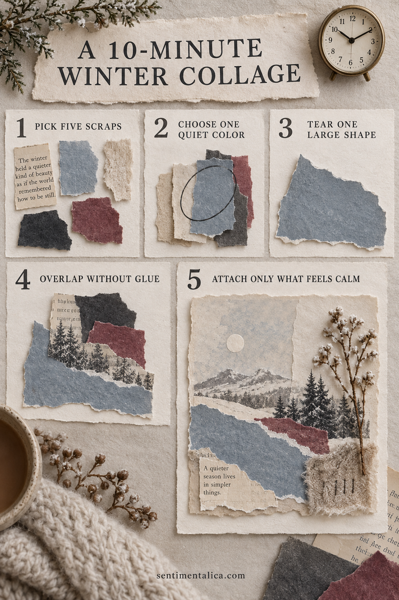
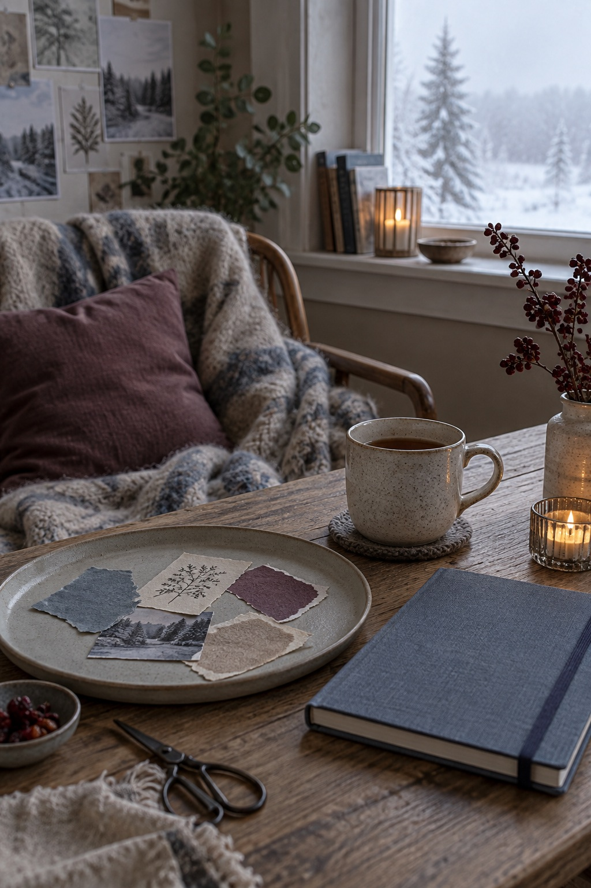

This ten-minute winter collage is for days when making something sounds helpful but choosing supplies does not. Use a tiny paper set, one focal fragment, and a timer that gives you permission to stop.

Pick five scraps before the timer starts
Choose one book scrap, one neutral, one muted color, one dark anchor, and one tiny textured piece. Limiting the pile removes the pressure to search for the perfect material.
Choose one quiet color
Let cream, fog blue, soft gray, or oat occupy most of the page. A quiet field gives your hands somewhere to begin and keeps the result calm.
Tear one large shape
Make the largest scrap about the size of your palm and place it off-center. It does not need a decorative edge; one confident shape is enough.
Overlap without glue
Move the remaining pieces until each touches another. Turn a busy pattern over if it demands too much attention. Photograph the arrangement before attaching anything.
Attach only what still feels calm
Glue the center of each paper with a thin layer. Leave one edge loose for texture, add a date, and stop when the timer ends.
Want a low-pressure page to practise with? Open the 100 free floral pictures, choose one image that matches your palette, and try the method before using a favorite original.

Let the page stay simple
Use a glue stick or a thin layer of paper adhesive, keep wet glue away from photographs, and allow folded pieces to dry before closing the journal. Flat paper traces are safer for the binding than thick natural objects or heavy charms.
When the page is finished, add the full date and one sentence only you could have written. That final detail turns a pretty arrangement into a memory.
Prepare a small, calming workspace
Clear only enough room for the open journal and one shallow tray. Put scissors, adhesive, pencil, and the chosen papers within reach, then move the larger supply boxes away. A limited workspace reduces repeated decisions and makes it easier to notice when the page is already complete.
If you feel rushed, do the construction first and the writing later. Keep the photograph or note in the unfinished pocket so nothing is lost. The page can wait until you have the quiet attention its story deserves. Close the supplies when you stop so returning feels easy.
Use the timer as a boundary, not a challenge
Set ten minutes once the papers are chosen. Spend the first two minutes tearing, the next four arranging, and the final four attaching only the pieces you still like. The goal is not to work faster. The timer protects the project from becoming another open-ended decision.
When time ends, place unused scraps in one envelope and write the date on the collage. Do not evaluate it immediately. Return the next day and add writing only if a sentence comes naturally. A small unfinished-looking edge or visible pencil mark can remain; the page is evidence that you paused, not proof that you performed perfectly.